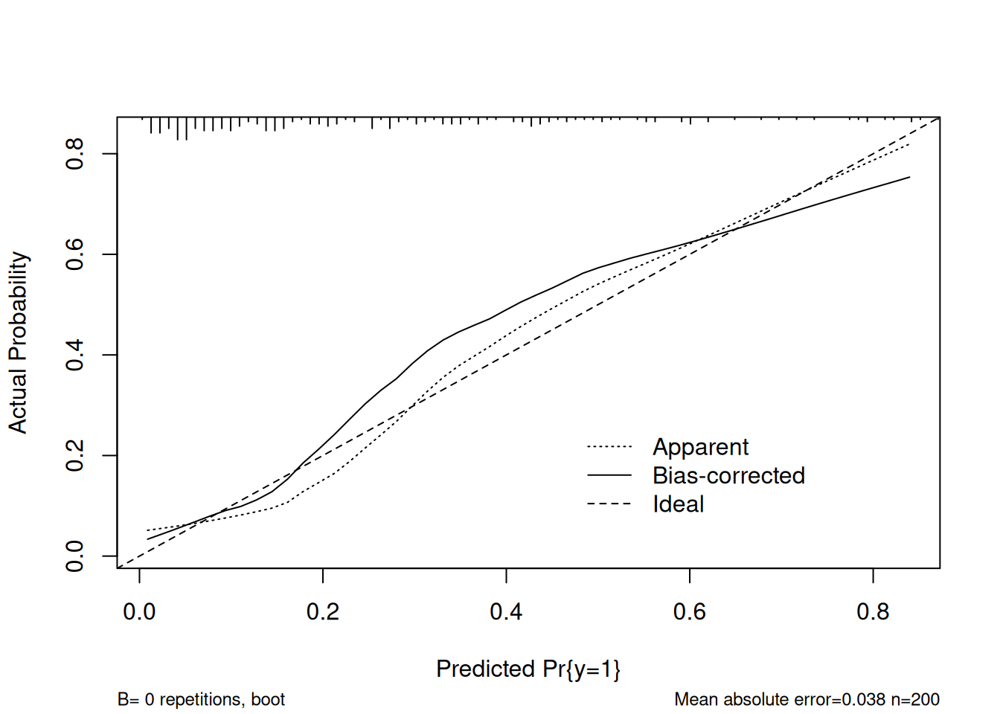
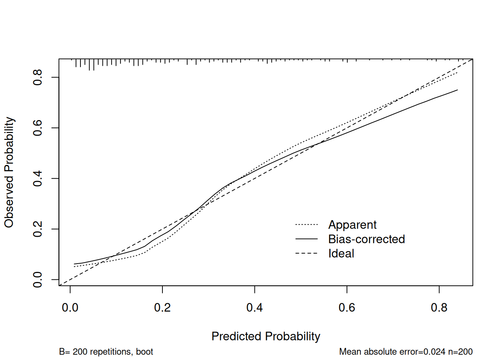

library(survival)
library(lattice)
library(Formula)
library(ggplot2)
library(Hmisc)
library(rms)
library(gridExtra)
library(reshape2)
library(MASS)
library(mgcv)
library(glmnet)
library(pROC)
library(caret)Model Validation
Computer Practical Solutions
Model Validation
Model validation is the process of evaluating how well a predictive model performs when applied to new, unseen data. It helps assess the reliability, robustness, and generalizability of the model’s predictions beyond the training dataset.
There are two main types of validation:
- Apparent validation: Evaluates model performance on the same data used to fit the model. It often overestimate sperformance.
- Internal validation: Uses resampling techniques (e.g., cross-validation, bootstrap) to estimate performance while correcting for optimism.
- External validation: Tests the model on an independent dataset to assess transportability.
Key Sections :
This part 1.3 Model Validation will consist of some sections :
- Learn about Apparent Validation vs Internal Validation
- Learn about Internal Validation via Bootstrap
- Learn about Validation by using split-sample, cross-validation, and Bootstrap validation
- Learn about internal vs external validation
Keywords for table summary :
| Fields | Definition |
|---|---|
| Dxy | How well your model separates good cases from bad cases. Higher is better. |
| R² | How much of the variation in your outcome your model explains. |
| Intercept | Should be close to 0. |
| Slope | How spread out your predictions are compared to reality. Should be close to 1. |
| Emax | The biggest calibration error the model makes. |
| D | Another measure of how well your model discriminates between outcomes. Similar to Dxy but on a different scale. |
| U | A measure of how much the model’s predictions deviate from perfect calibration. |
| Q | Combines discrimination and calibration into one score. |
| B | Measures how well-calibrated your predictions are. |
| g | How much your model’s predictions vary. |
| gp | A adjusted version of g that accounts for the number of predictors in your model. |
| Method | Trains on | Tests on | Generalization Level | Best For |
|---|---|---|---|---|
| Bootstrap | Resampled dataset | Out-of-bag data | Internal (with optimism correction) | Small datasets |
| K-Fold CV | K-1 folds | 1 held-out fold | Internal | Medium–large datasets |
| Cross-validation | Varies (e.g., LOOCV, repeated CV) | Left-out part | Internal | Hyperparameter tuning |
| External Validation | Original data | Completely new data | External (real-world test) | Final model evaluation |
Load the library
Load Datasets and Saved Model
df <- readRDS(file.path("data" ,"dataset.rds"))
model4 = readRDS(file.path("model", "model4.rds"))1) Apparent Validation
Apparent validation in lrm refers to evaluating model performance on the same data used to fit the model.
print(model4)Logistic Regression Model
lrm(formula = y ~ x1 + x2 + x3 + x4 + x5, data = df, x = TRUE,
y = TRUE)
Model Likelihood Discrimination Rank Discrim.
Ratio Test Indexes Indexes
Obs 200 LR chi2 57.80 R2 0.368 C 0.831
0 148 d.f. 7 R2(7,200)0.224 Dxy 0.662
1 52 Pr(> chi2) <0.0001 R2(7,115.4)0.356 gamma 0.662
max |deriv| 8e-09 Brier 0.136 tau-a 0.256
Coef S.E. Wald Z Pr(>|Z|)
Intercept -1.4740 0.5031 -2.93 0.0034
x1 1.5514 0.3056 5.08 <0.0001
x2 0.1240 0.2446 0.51 0.6121
x3=1 0.3845 0.4445 0.86 0.3870
x4=1 -0.5616 0.4164 -1.35 0.1774
x5=2 0.1054 0.5659 0.19 0.8522
x5=3 -0.2656 0.5883 -0.45 0.6517
x5=4 0.2856 0.6742 0.42 0.6718 cal_apparent <- calibrate(model4, B = 0)
plot(cal_apparent)
n=200 Mean absolute error=0.038 Mean squared error=0.00255
0.9 Quantile of absolute error=0.09validate(model4, "boot",0) index.orig training test optimism index.corrected n
Dxy 0.6622 0.6783 0.6195 0.0588 0.6034 2
R2 0.3679 0.3830 0.3245 0.0585 0.3094 2
Intercept 0.0000 0.0000 -0.0074 0.0074 -0.0074 2
Slope 1.0000 1.0000 0.7996 0.2004 0.7996 2
Emax 0.0000 0.0000 0.0511 0.0511 0.0511 2
D 0.2840 0.2864 0.2452 0.0412 0.2428 2
U -0.0100 -0.0100 0.0227 -0.0327 0.0227 2
Q 0.2940 0.2964 0.2225 0.0739 0.2201 2
B 0.1357 0.1230 0.1419 -0.0189 0.1546 2
g 1.8026 2.0026 1.6111 0.3915 1.4111 2
gp 0.2526 0.2364 0.2375 -0.0011 0.2537 2- AUC = 0.831, R² = 0.368 → Strong performance.
- But: This uses the same data the model was trained on → likely overestimates performance.
- By using the validate and set the bootstrap into 0 ( mean likely similar with current datasets, the test of Slope is near 1 (0.098)
Apparent validation evaluates model performance using the same data it was trained on. This might seem convenient, but it’s overly optimistic and misleading for several reasons:
- The model may learn patterns that are specific to the training data (noise), and these won’t generalize. Apparent validation can’t detect this.
- Accuracy, AUC, and R² often appear much higher than they really are — because the model is tested on data it has already “seen.”
- Relying on apparent validation may lead to deploying models that fail when exposed to new data.
2) Boostrap Validation
Bootstrap validation involves repeatedly sampling with replacement from the original dataset, fitting the model on each sample, and evaluating it on the “left-out” data.
How it works:
- Create “bootstrap samples” (e.g., 200 samples of the same size as the original dataset).
- Fit the model on each bootstrap sample.
- Evaluate the model on the data not included in that sample (called “out-of-bag”).
- Measure the optimism in performance (e.g., AUC, R²), and subtract it from the original score.
validate(model4, "boot",50) index.orig training test optimism index.corrected n
Dxy 0.6622 0.6952 0.6345 0.0607 0.6015 50
R2 0.3679 0.4090 0.3410 0.0680 0.2999 50
Intercept 0.0000 0.0000 -0.1275 0.1275 -0.1275 50
Slope 1.0000 1.0000 0.8472 0.1528 0.8472 50
Emax 0.0000 0.0000 0.0599 0.0599 0.0599 50
D 0.2840 0.3231 0.2599 0.0632 0.2207 50
U -0.0100 -0.0100 0.0067 -0.0167 0.0067 50
Q 0.2940 0.3331 0.2531 0.0800 0.2140 50
B 0.1357 0.1288 0.1424 -0.0137 0.1494 50
g 1.8026 2.0097 1.6833 0.3264 1.4762 50
gp 0.2526 0.2647 0.2429 0.0219 0.2307 50cal <- calibrate(model4, B = 200)
plot(cal, xlab = "Predicted Probability", ylab = "Observed Probability")
n=200 Mean absolute error=0.024 Mean squared error=0.00087
0.9 Quantile of absolute error=0.044- AUC (approx from Dxy/2) ≈ 0.613 + 0.5 = 0.8065, R² = 0.305 → slight optimism corrected.
- Calibration slope drops to 0.869 → indicates some overfitting.
- Intercept shifts to -0.109 → tendency to overpredict risk.
- Emax = 0.051 → modest miscalibration at some points.
3) Cross Validation
Cross-validation involves splitting the dataset into parts, training the model on some parts, and testing it on the others — repeating this multiple times.
How it works (general):
- Divide the data into K subsets (e.g., 5 or 10).
- In each round, use K-1 folds for training and 1 fold for validation.
- Rotate so each fold is used as validation once.
- Average the results (AUC, accuracy, etc.) across all folds.
validate(model4, "crossvalidation", B = 10) index.orig training test optimism index.corrected n
Dxy 0.6622 0.6642 0.6207 0.0435 0.6187 10
R2 0.3679 0.3716 0.4281 -0.0564 0.4243 10
Intercept 0.0000 0.0000 1.4915 -1.4915 1.4915 10
Slope 1.0000 1.0000 5.2499 -4.2499 5.2499 10
Emax 0.0000 0.0000 0.3813 0.3813 0.3813 10
D 0.2840 0.2872 0.3125 -0.0253 0.3093 10
U -0.0100 -0.0111 0.1047 -0.1158 0.1058 10
Q 0.2940 0.2983 0.2078 0.0905 0.2035 10
B 0.1357 0.1347 0.1505 -0.0158 0.1515 10
g 1.8026 1.8258 7.2753 -5.4495 7.2522 10
gp 0.2526 0.2536 0.2420 0.0117 0.2409 10- Reasonable discrimination (Dxy ~0.61), means good discrimination
- Corrected R² (0.3677) suggests the model explains ~37% of variance
- Emax Maximum Calibration Error : 0.2611
4) Split Sample Validation
Randomly split the dataset into training and testing subsets. In this practice, we divide into 70% train data and 30% test data.
train_size = 0.7
len_df = nrow(df)
train_end = floor(train_size*len_df)
df_train = df[1:train_end, ]
df_test = df[(train_end + 1):len_df, ]train_model <- lrm(y ~ x1 + x2 + x3 + x4 + x5,
data = df_train, x = TRUE, y = TRUE)Do prediction on new data.
pred_probs <- predict(train_model, newdata = df_test, type = "fitted")
auc(roc(df_test$y, pred_probs))Area under the curve: 0.8326- AUC = 0.8326, close to apparent → may be unstable due to small sample size. The model correctly ranks pairs of cases 83.26% of the time.
5) K-Fold Cross-Validation
K-fold cross-validation is a type of cross-validation where the dataset is split into K equal parts, and the process is repeated K times.
Example (5-fold CV):
- Data is split into 5 parts (folds).
- Train on 4 folds, validate on 1 fold.
- Repeat this process 5 times so each fold is used once for validation.
ctrl <- trainControl(method = "cv", number = 5)
train_cv <- train(as.factor(y) ~ x1 + x2 + x3 + x4 + x5,
data = df,
method = "glm",
family = binomial,
trControl = ctrl)
train_cvGeneralized Linear Model
200 samples
5 predictor
2 classes: '0', '1'
No pre-processing
Resampling: Cross-Validated (5 fold)
Summary of sample sizes: 159, 160, 160, 161, 160
Resampling results:
Accuracy Kappa
0.7950719 0.4103705- Accuracy = 0.7751: The model correctly predicted the outcome 77.5% of the time
- Kappa = 0.3134: This measures agreement beyond chance
- Confirms similar performance to bootstrap.
6) Internal vs External Validation
External validation tests the model on a completely independent dataset that was not used at all during model development.
set.seed(123)
logit <- function(x){log(x/(1-x))}
expit <- function(x){exp(x)/(1+exp(x))}
# Simulate a dataset
n = 300
x1 <- rnorm(n)
x2 <- rnorm(n)
x3 <- rbinom(n, 1, prob = 0.35)
x4 <- rbinom(n, 1, prob = 0.5 )
x5 <- sample(1:4, size = n, replace = TRUE, prob =c(0.3,0.3,0.2,0.2))
logit.py <- -2+x1+0.2*x1^2+0.3*x2+0.1*x2^2+0.2*(x3==2)+0.2*(x4==2)+0.2*(x5==2)-
0.1*(x5==3)+0.2*(x5==4)+rnorm(n,0,0.1)
py <- expit(logit.py)
y <- rbinom(n,1,py)
df_test_external <- data.frame(y = factor(y), x1, x2, x3 = factor(x3), x4 = factor(x4), x5 = factor(x5))pred_probs_external <- predict(model4, newdata = df_test_external, type = "fitted")
auc(roc(df_test_external$y, pred_probs_external))Area under the curve: 0.79690.7969 means the model correctly ranks pairs of cases 79.69% of the time.
Summary of Validation Method
| Metric | Apparent Validation | Bootstrap (Internal) | 5-Fold CV | Split-Sample | External Validation |
|---|---|---|---|---|---|
| AUC / C-index | 0.831 | 0.613 (corrected Dxy) → AUC ≈ 0.8065 | — | 0.8326 | 0.7969 |
| R² | 0.368 | 0.305 (corrected) | — | — | — |
| Calibration Slope | 1.000 | 0.869 | — | — | — |
| Intercept | 0.000 | -0.109 (bias) | — | — | — |
| Emax | 0.000 | 0.051 | — | — | — |
| Accuracy | — | — | 0.775 | — | — |
| Kappa | — | — | 0.313 | — | — |
The model shows strong performance in apparent validation, but bootstrap and external validation reveal some overfitting, especially in calibration. After correcting for optimism, AUC remains strong (~0.80) and R² is solid (~0.31), making the model acceptable for use, but not perfect.